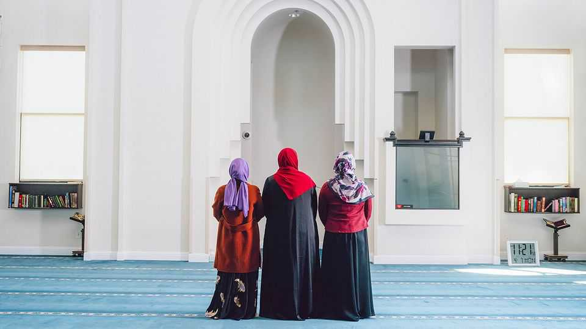
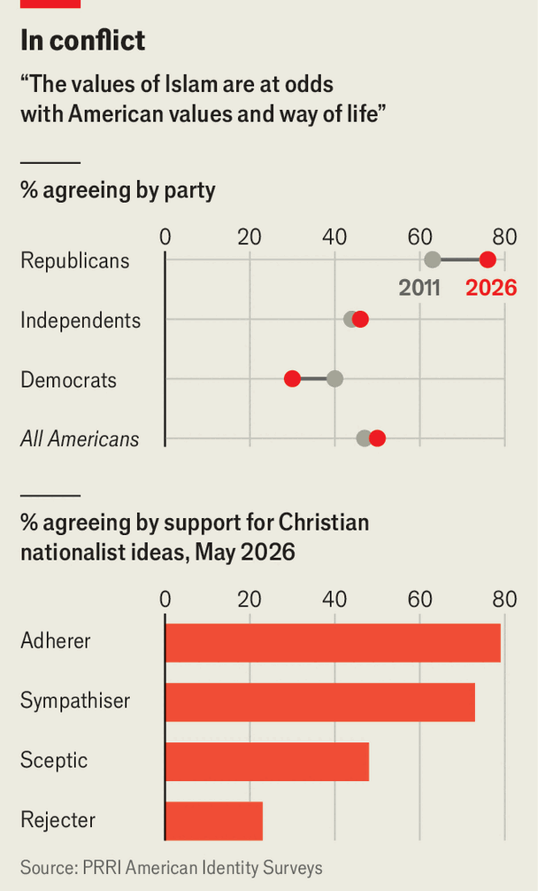

Texas is waging a battle to stop “Islamification”
America’s biggest Republican state offers a playbook for a new identity politics
July 9th 2026

Eighteen months ago Republicans in Texas took on a new fight. It began in February 2025, when Greg Abbott, the governor, described a housing development proposed by the East Plano Islamic Centre as an example of “sharia cities”. A dozen state agencies then launched investigations. In November he designated the Council on American-Islamic Relations (CAIR), America’s biggest Muslim civil-rights group, a “foreign terrorist organisation” and barred it from buying land in the state. In March the state comptroller shut Muslim schools out of Texas’s new voucher scheme. The state Republican Party now ranks “Stop the Islamification of Texas” second on its list of legislative priorities.
On its face, this looks like a revival of the backlash to radical Islam that followed the 9/11 attacks. But today’s campaign is driven by fear not so much of external violence as of internal transformation. Across the country, support is swelling for ideas that fuse American civic life with Christian values, loosely defined as Christian nationalism. How this agenda will evolve is still unclear. But Texas, America’s largest Republican state, is now showing one way forward, asserting America’s Christian roots while battling fiercely against a perceived threat.
“The United States of America was founded as a Christian nation,” Mr Abbott stated earlier this year, as part of a defence of religious freedom. Other prominent proponents of America’s Christian identity include J.D. Vance, the vice-president, Pete Hegseth, the secretary of war, and Charlie Kirk, a conservative influencer assassinated in 2025. Kirk, to whom Donald Trump posthumously awarded the Presidential Medal of Freedom, tied America’s Christian character to a specific composition of citizenry. America, he argued, was living through a “constitutional crisis” because “you cannot have liberty if you do not have a Christian population”.
A growing number of politicians view Islam, in particular, as a threat to the country’s identity. In the 13 months to March, 46 Republican elected officials across America published 1,111 anti-Muslim posts, a 15-fold increase in monthly volume, according to the Centre for the Study of Organised Hate, a watchdog group. Many painted Islam as a death cult working to indoctrinate children and take over society. Tommy Tuberville, a senator from Alabama, shared a post that paired photos of New York’s Muslim mayor with the burning twin towers, warning that “the enemy is inside the gates.” Andy Ogles, a Tennessee congressman, said that “Muslims don’t belong in American society.”
Mr Trump likes to point to European cities as disastrous parables, with Paris and London “no longer recognisable” and the latter moving towards “sharia law”. Last year two Texas congressmen, Chip Roy and Keith Self, founded the “Sharia-free America Caucus” in Congress. It has since recruited 66 other members from 25 states.

This reflects a spreading anxiety within pockets of the electorate. Three-quarters of Republicans think that American values and Islam are in conflict, according to the Public Religion Research Institute, compared with 30% of Democrats, a partisan gap that has doubled since 2011 (see chart). Those who support the idea of America as a Christian nation are even more likely to think Islam is a risk.
With Muslims making up about 1% of the country’s population, fears of a takeover may seem misplaced. To the movement’s proponents, that isn’t the point. “Christian values form the foundation of our nation and the constitutional system that governs our daily lives,” noted Mr Self in a recent press release celebrating the success of the anti-sharia caucus. “Sharia and its principles”, he added, “stand in direct opposition to those foundations.” Muslims are the perfect foil for defining who is a “true citizen”, says Andrew Whitehead, who studies Christian nationalism at the University of Indiana.
Congress has a few nascent bills. Mr Roy has introduced legislation to bar foreigners who observe sharia law from entering the country, and Randy Fine of Florida has filed a facetious one to “protect puppies” from sharia bans. Texas is a few steps ahead. Mr Abbott’s office told The Economist that the governor’s policies do not vilify “law-abiding Texas Muslims”, but target “those who aid terrorism or attempt to impose foreign law on American soil”.
In practice, Republican ideas are wide-ranging, from the attempt to stop taxpayer funds going to any organisation that has “allegiance to a foreign legal system” to a push “to deport advocates of sharia law”. After the Texas legislature required the Ten Commandments to be displayed in classrooms last year, in late June the state board of education overhauled its curriculum. New guidelines drop a middle-school “World Cultures” class and replace high-school units that “explain the significant beliefs of Islam” with ones that “describe the teachings of jihad and how they led to the expansion of Islam and the conquest of Christian land”. Pupils will now be required to read more Bible stories.
For Republicans who have defended religious liberty, this is awkward. Shaimaa Zayan of CAIR, the non-profit Mr Abbott branded a terrorist organisation, says what was once “Islamophobia” has now turned into “religious persecution”. “They’re trying to make our lives hell so we self-deport,” she contends. Sam Westrop of the Texas Public Policy Foundation argues that the “mob-like noise” on social media obscures a genuinely dangerous rise in Islamist extremism in America. The right, he says, needs to realise that ordinary Muslims could be allies in the fight against it.
When Oklahoma tried to quash consideration of sharia law by courts over a decade ago, a judge overturned the rule. Mr Abbott’s efforts in Texas have so far fared only slightly better. Courts have blocked the state’s attempt to exclude Islamic schools from the voucher programme and have allowed a religious-discrimination lawsuit brought by the East Plano Islamic Centre to proceed. A judge appointed by Ronald Reagan rebuked the state, observing that “no evidence has been presented” that the mosque intends to impose sharia law on Texans.
This is unlikely to deter Texan legislators, who are due to reconvene in January. They will take cues from Mr Abbott. “The governor will not allow empathy to enable bad actors who would destroy Texas and America from the inside, as has already happened in the United Kingdom,” says Andrew Mahaleris, his press secretary.
Other states are taking note. Mr Fine, the Florida congressman, says a recent poll of Republican primary voters in his district found they cared seven times more about “Islam in America” than abortion, and six times more than about gun rights. When asked by The Economist to define “sharia law”, Mr Fine skirted the question, instead reiterating that Islam is rooted in an ideology of “conquest and submission” that threatens democracy. As for others who are pushing their religion into public life? The Jewish lawmaker is conciliatory. “The United States is a Christian nation,” he says. “We need to understand where we live.”■
Stay on top of American politics with The US in brief, our daily newsletter with fast analysis of the most important political news, and Checks and Balance, a weekly note that examines the state of American democracy and the issues that matter to voters.